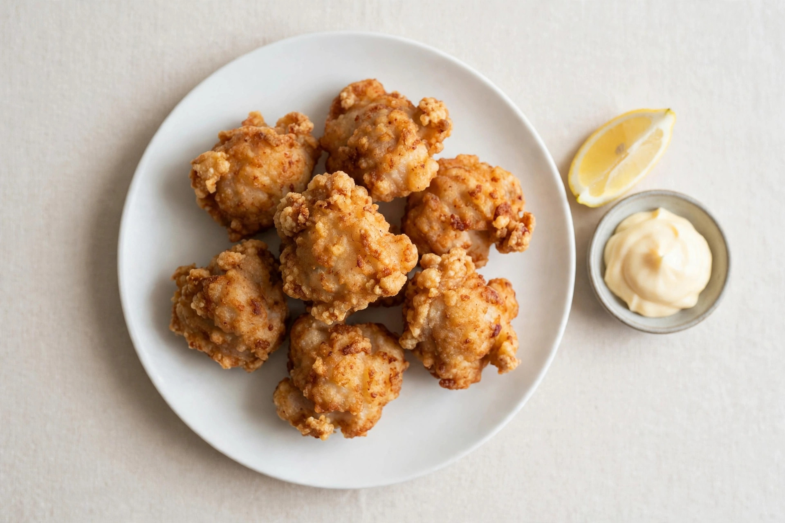

唐揚げ
Karaage · kah-rah-ah-geh
What is karaage?
Japanese fried chicken — bite-sized thigh pieces marinated in soy, ginger, and garlic, coated in potato starch, fried to a light crisp. Juicier and lighter than anything with "crispy" in the English name.
What's inside
🍗 Chicken thigh
Raw / cooked
🔥 Fried
Spicy?
No
Typical price
¥400–700
Why it's different from KFC
- Marinated first — the flavor is in the meat, not just the crust.
- Potato starch, not batter — a thin, delicate coating instead of a thick crunchy shell.
- Thigh meat — dark meat stays juicy; this is non-negotiable in Japan.
- Bite-sized — made for chopsticks and sharing.
How it's served
- As a side: with ramen, in izakaya (the #1 izakaya order alongside edamame).
- On rice: からあげ丼 karaage-don — fried chicken rice bowl.
- In bento: the anchor of countless convenience-store and department-store lunch boxes.
- With lemon and mayo — squeeze, dip, repeat.
Where to find the best
Specialty shops exist (search からあげ専門店), but honestly: izakaya karaage is consistently excellent, and even konbini versions (Lawson's Karaage-kun, FamilyMart's Famichiki) are worth trying. Japan doesn't really do bad karaage.
Common questions
Is it the same as tatsuta-age?
Close cousins. Tatsuta-age （竜田揚げ） is also marinated fried chicken — the marinade leans more soy-heavy. Most travelers won't taste the difference.
Chicken nanban?
チキン南蛮 is karaage's fancy sibling from Miyazaki: fried chicken with sweet vinegar sauce and tartar. If you see it, order it.